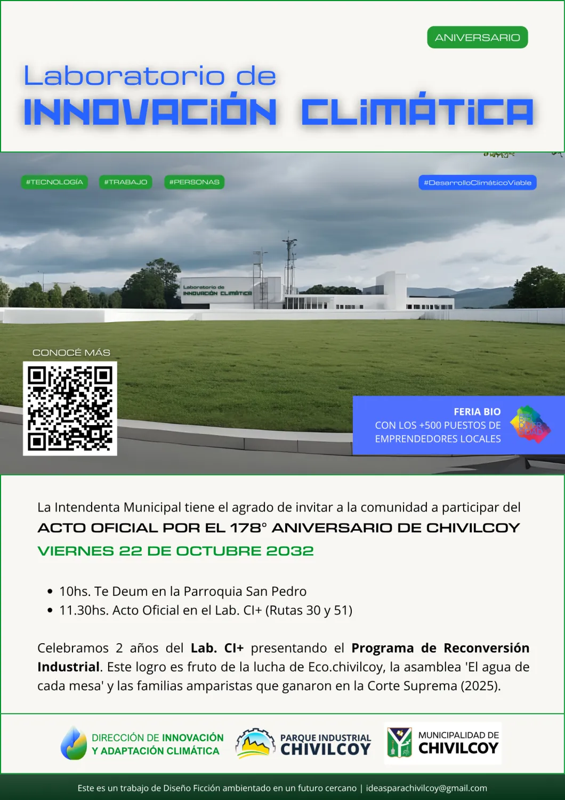

Práctica de mundanidad #01
El Lab existe para imaginar desde el sur. Pero imaginar desde el sur no es lo mismo si estás en Chivilcoy, en Bogotá, en Monterrey, en Madrid, en Valencia o en Viena. La distancia cambia lo que ves. También cambia lo que extrañás.
Esta práctica propone lo mismo para todos: un futuro cercano, mundano, situado. Un escenario de acá a poco — no de ciencia ficción, sino de cotidianidad forzada — y un artefacto diegético que lo haga tangible. Puede ser digital, físico, o las dos cosas. Si es físico, documentalo.
Un artefacto diegético es un objeto que existe dentro del escenario que imaginaste, como si ese futuro ya hubiera llegado. Puede ser una notificación, un cartel, un formulario, una etiqueta, un ticket. Algo que alguien usaría o vería en ese mundo sin que nadie lo explique.
El tema es libre. Podés pensarlo desde tu práctica laboral, desde algo que te apasiona, desde algo que te pasó el otro día, desde una incomodidad que no te podés sacar de la cabeza, desde una conversación que no terminó. El único ancla es este Lab y lo que te convoca a estar en él: la mundanidad forzada, LATAM, la diáspora, lo que vivís desde donde estás. La pregunta implícita es siempre la misma: ¿qué tiene de extraordinario tu ordinario?
¿Necesitás un ejemplo concreto? Miriam Latorre, de la red, imaginó un futuro cercano donde Chivilcoy se convirtió en laboratorio de innovación climática — y construyó el cartel y el sitio web de ese laboratorio ficticio como artefacto. Podés verlo en la bitácora.

Fecha estimada de cierre: junio 2026.